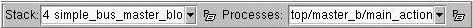

The Simulation tool bar, located beneath the Project Design tool bar, becomes enabled when simulation is invoked.
Figure 12‑2. Simulation Tool Bar
To the right of these icons, the Simulation tool bar includes drop down lists for viewing the function call stack and simulation processes.

Tool bar icons include the following:
For each simulation, a new tab is added next to the Projects tab, enabling you to save multiple simulations. You can hide a tab and reshow it by double-clicking on the simulation folder in the browser.